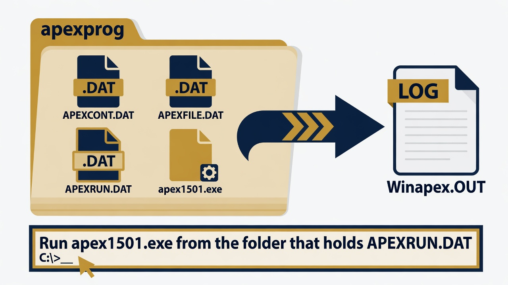

APEX
Command-line apex1501.exe from the WinAPEX program folder. Do not start with the WinAPEX GUI for the verified run.

1. Get the software
Download WinAPEX / APEX from Texas A&M AgriLife EPIC/APEX. Lab install: C:\Grok\Models\installs\APEX (installer archive\downloads\winapex_setup.exe).
2. Stand in the input folder
cd C:\Grok\Models\installs\APEX\WinApex\apexprog
Confirm APEXRUN.DAT, APEXCONT.DAT, and apex1501.exe are in that folder.
3. Run
.\apex1501.exe
4. Confirm success
Exit code 0 and a large Winapex.OUT (about 1 MB or more for the 40-year example). Search the OUT file for the sediment summary line beginning with YS.